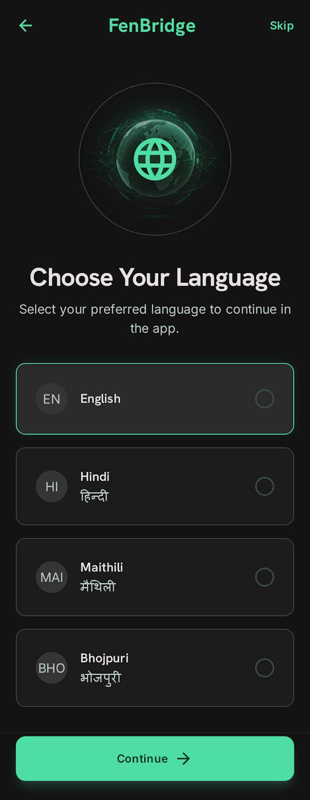
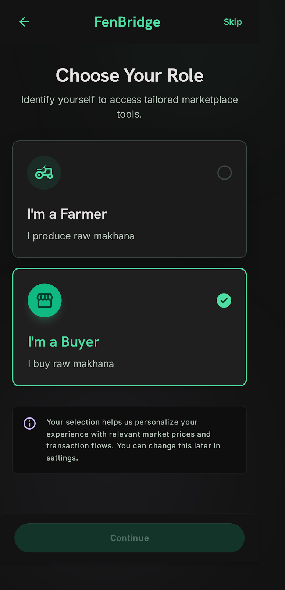
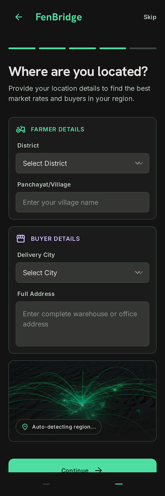
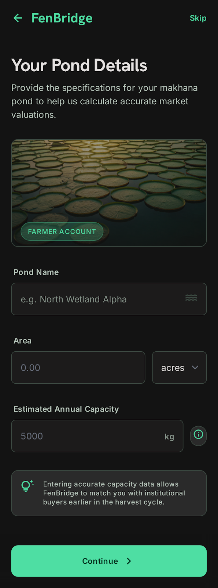
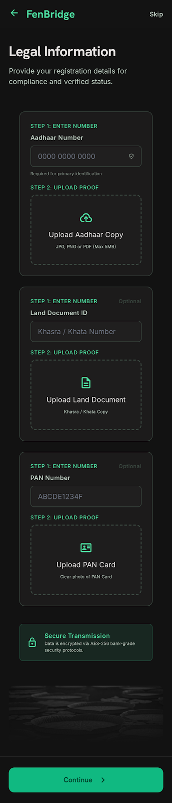
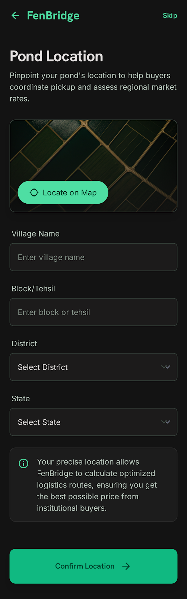
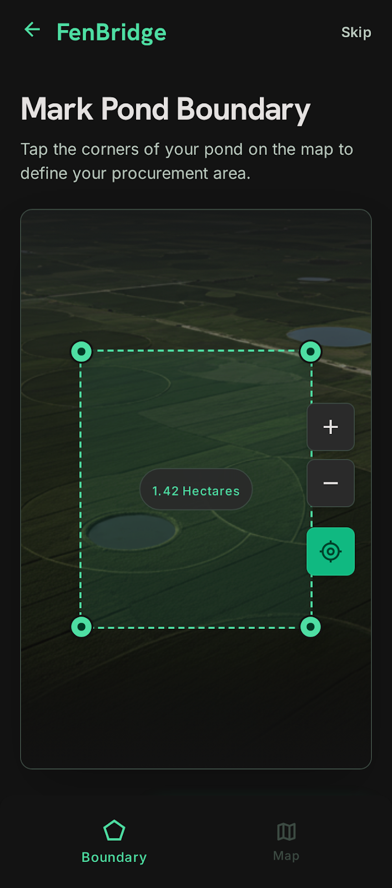
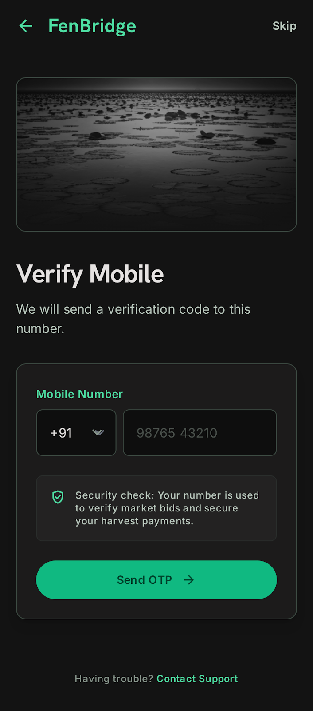
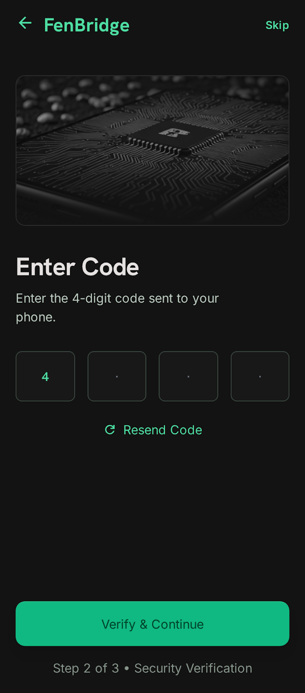

Step 01
Welcome to FenBridge
welcome_to_fenbridge

High-fidelity screen capture unavailable. Refer to source code directly.
Operational Purpose
Introduce the app and set the foundational tone for farmer onboarding.
Business Requirement
Build instant trust, communicate core value proposition transparently in the first 2 seconds.
User Experience (UX)
Static splash-like screen layout, focused flow without extraneous interactive distraction.
User Actions
- Tap "Get Started" primary execution button.
Design Details
- Centered FenBridge logo representation.
- Subtitle copy anchoring fair direct farm engagements.
Technical Routing & API
Evaluates cached identity objects natively. If Google auth is valid, route bypasses safely. Path: Splash → Welcome → Language Selection.
Database Schema
// No raw schema block writing. Tracks basic telemetry view context safely.
Step 02
Choose Your Language
choose_your_language

High-fidelity screen capture unavailable. Refer to source code directly.
Operational Purpose
Set primary language preference string for the target active session context persistently.
Business Requirement
Support deep regional localization (English, Hindi, Bengali) minimizing dispute horizons on batch delivery records.
User Experience (UX)
Three bold radio-button preview tiles. Selection auto-highlights dynamically.
User Actions
- Tap target Language Tile block (English / हिन्दी / বাংলা).
- Tap "Continue" action element.
Design Details
- Progress step string indicator layout mapping active timeline count.
- Equal-height tile objects containing script identifiers safely.
Technical Routing & Persistence
Cached cleanly inside SharedPreferences layers. Dynamic client parsing automatically populates target translation strings from core i18n configurations.
Database Schema
users (
id UUID PRIMARY KEY,
preferred_language VARCHAR(10) -- [en, hi, bn]
)
Step 03
Choose Your Role
choose_your_role

High-fidelity screen capture unavailable. Refer to source code directly.
Operational Purpose
Route user natively to role-specific mapping flows and isolate persistent permissions matrices directly post-signup.
Business Requirement
User explicitly registers intent. Target parameter locks state to prevent unwanted access bypassing without Admin review layers.
User Experience (UX)
Two structured tappable tiles with prominent icon + title + subtitle descriptors. Single select constraint applied.
User Actions
- Tap "I'm a Farmer" persona block element.
- Tap primary "Continue" target button.
Design Details
- Visual vector seedling elements distinguishing the producer path cleanly.
- Accent-bordered tile transformations applying upon state pick.
Technical Routing & RBAC
Role stored as strict ENUM context string. Path context diverges cleanly here ensuring downstream input components adapt automatically to agricultural source needs.
Database Schema
users (
id UUID PRIMARY KEY,
role ENUM ['farmer', 'buyer', 'scout'] NOT NULL,
role_locked_at TIMESTAMP NOT NULL
)
Step 04
Address Details
address_details

High-fidelity screen capture unavailable. Refer to source code directly.
Operational Purpose
Capture primary geographic district and state nodes to schedule field support routing loops and match buyer radial coverage indices safely.
Business Requirement
Address limits regional visibility parameters safely ensuring broadcast procurement demands match production supply locations exactly.
User Experience (UX)
Searchable district dropdown block paired alongside standard textual inputs for rural Panchayat tracking.
User Actions
- Select target District Dropdown list item.
- Enter full string descriptor inside Panchayat/Village row.
Design Details
- Helper copy below forms setting clear delivery context expectations.
- Optimized client parsing avoiding heavy backend layout locking.
Technical Routing & Geocoding
Populates verified static indices containing mapped Indian administrative boundary records natively. Ready for automated location reverse-geocoding APIs.
Database Schema
users (
id UUID PRIMARY KEY,
district VARCHAR(100) NOT NULL,
panchayat_village_city VARCHAR(200)
)
Step 05
User Details
user_details

High-fidelity screen capture unavailable. Refer to source code directly.
Operational Purpose
Capture verified legal identity strings ensuring automated downstream payout routines match banking documentation exactly without processing exceptions.
Business Requirement
Name maps directly inside transaction purchase orders. Primary communication email acts as the core recovery pipeline.
User Experience (UX)
Pre-filled read-only email input layers displaying Google token sources clearly alongside editable user names.
User Actions
- Verify auto-populated Email string field.
- Input official full title inside Name block exactly as per legal identity maps.
Design Details
- Subtle info lock vector element displaying trusted Google JWT parsing states.
- Clear form validations parsing unwanted special string characters automatically.
Technical Details & Data Source
Parses standard claims returned by third-party ID providers directly. Applies strict minimum length regex filtering rules to ensure DB record cleanliness.
Database Schema
users (
id UUID PRIMARY KEY,
email VARCHAR(255) NOT NULL UNIQUE,
full_name VARCHAR(200) NOT NULL,
email_verified_at TIMESTAMP
)
Step 06
Farm/Pond Details
farm_pond_details

High-fidelity screen capture unavailable. Refer to source code directly.
Operational Purpose
Capture core operational asset identity and baseline yield expectations to feed dynamic automated reverse-auction matching algorithms.
Business Requirement
Pond specifications map farmer supply capacities to verify eligibility metrics when matching multi-tier corporate bulk procurement orders.
User Experience (UX)
Split input blocks optimizing rapid entry of local pond names, surface dimensions, and standard unit selectors seamlessly.
User Actions
- Type local pond title inside Pond Name input box.
- Select unit scale (Acres/Bigha) and enter numeric boundary area.
- Input expected raw volume inside Annual Capacity (kg) line.
Design Details
- Helper captions assisting immediate estimation conversions.
- Clean split field grid rendering cleanly inside narrow viewports.
Technical Conversion & Storage
Area parameters execute server-side normalization logic converting local metric strings into uniform standard square meter records to track global supply clusters reliably.
Database Schema
ponds (
id UUID PRIMARY KEY,
user_id UUID FOREIGN KEY,
pond_name VARCHAR(200) NOT NULL,
area_value DECIMAL(8, 2) NOT NULL,
area_unit ENUM ['acres', 'bigha'],
area_sqm DECIMAL(10, 2) GENERATED,
estimated_annual_capacity_kg INT,
is_primary BOOLEAN DEFAULT true
)
Step 07
Farm/Pond Legal Details - High Visibility Uploads
farm_pond_legal_details_high_visibility_uploads

High-fidelity screen capture unavailable. Refer to source code directly.
Operational Purpose
Collect secure visual verification proof mapping target land titles, local water usage agreements, and primary operating permits directly.
Business Requirement
Builds foundational farmer trust scores. Presence of verified document paths increases profile exposure when listed on central platform dashboards.
User Experience (UX)
Three clear intuitive upload blocks rendering high-fidelity thumbnail preview snapshots instantly upon selection.
User Actions
- Tap target Vault Upload card container.
- Choose local file or invoke native device cameras directly.
- Review auto-generated thumbnail snapshots with quick removal tools.
Design Details
- Distinct vector badge tags mapping document classifications safely.
- Dashed frame boundaries denoting accessible drop zone states.
Technical Integration & Cloud Vault
Implements smart client-side compression targeting 1–2 MB payloads prior to streaming straight to secure encrypted Supabase storage instances.
Database Schema
pond_documents (
id UUID PRIMARY KEY,
pond_id UUID FOREIGN KEY,
document_type ENUM ['ownership_lease', 'revenue_cert', 'pond_registration'],
file_url VARCHAR(500),
uploaded_at TIMESTAMP
)
Step 08
Farm/Pond Address
pond_address

High-fidelity screen capture unavailable. Refer to source code directly.
Operational Purpose
Capture exact geographical coordinates of the operating pond to map field scout visit tracks and optimize real-time dispatch routing logistics.
Business Requirement
Address identifiers govern regional scout allocation structures automatically ensuring field operations scaling models execute flawlessly.
User Experience (UX)
Clean responsive input fields supporting easy drop-down search matching paired alongside intuitive reverse-geocoding controls.
User Actions
- Select target District Dropdown configuration.
- Input literal string identifiers for Panchayat / Village mapping.
Design Details
- Tactile layout row options activating fast client side coordinate fetches.
- Clean text spacing providing maximum layout clarity.
Technical Architecture
Integrates dynamic lookup arrays mapping physical Indian regional boundaries. Optimized for background GPS payload validation.
Database Schema
pond_location (
id UUID PRIMARY KEY,
pond_id UUID FOREIGN KEY,
district VARCHAR(100) NOT NULL,
panchayat_village VARCHAR(200)
)
Step 09
Farm/Pond Geo-Fencing
pond_geo_fencing

High-fidelity screen capture unavailable. Refer to source code directly.
Operational Purpose
Capture precise GPS center point locators via interactive mapping layers to schedule exact field navigation boundaries securely.
Business Requirement
Coordinates enable automated routing tools and support targeted analytical yield mapping algorithms scheduled for upcoming deployment sprints.
User Experience (UX)
Full canvas map integration block rendering initial center points centered dynamically over tracked client device GPS coordinates.
User Actions
- Tap directly on the interactive map layer to manually set center pin locators.
- Tap "Use My Location" trigger to auto-align points instantly.
Design Details
- Visible coordinate string readouts mapping accurate latitude/longitude pairs.
- Immersive container layout rendering smooth hardware animations safely.
Technical Specification & Libraries
Utilizes robust client components parsing native mobile hardware looper streams. Supports downstream spatial geometries schemas flawlessly.
Database Schema
pond_location (
...
latitude DECIMAL(10, 8) NOT NULL,
longitude DECIMAL(11, 8) NOT NULL,
accuracy_meters INT,
geofence_polygon GEOMETRY -- (Staged for Phase 2 implementation)
)
Step 10
Verify Mobile - Step 1
verify_mobile_step_1

High-fidelity screen capture unavailable. Refer to source code directly.
Operational Purpose
Confirm primary farmer phone contacts ensuring active verification tokens route safely over robust downstream telecom bridges.
Business Requirement
Mobile acts as the sole vital real-time communication relay for reverse-auction alerts, automated payouts, and transport schedule loops.
User Experience (UX)
Clean prominent read-only numeric confirmation blocks supported by easy editing tools to prevent invalid sending cycles.
User Actions
- Review pre-loaded target Mobile Number formatting.
- Tap large primary "Send OTP" communication trigger.
Design Details
- High-contrast monospace number styling guaranteeing rapid verification review.
- Success confirmation dialog hints displaying delivery status updates.
Technical Telecom Infrastructure
Implements strict daily retry limits (max 3 dispatches) to secure gateway infrastructure against malicious spam automation attempts safely.
Database Schema
otp_requests (
id UUID PRIMARY KEY,
user_id UUID FOREIGN KEY,
mobile_number VARCHAR(20),
otp_code VARCHAR(6),
sent_at TIMESTAMP,
attempt_count INT DEFAULT 0,
status ENUM ['pending', 'verified', 'expired']
)
Step 11
Verify Mobile - Step 2
verify_mobile_step_2

High-fidelity screen capture unavailable. Refer to source code directly.
Operational Purpose
Validate numeric OTP token blocks entered by the client to prove phone ownership cryptographically before activating full workspace access.
Business Requirement
Verified contact maps authorize persistent delivery dispatches safely. Unverified profiles remain gated within draft operational review queues.
User Experience (UX)
Four split auto-advancing single-character input rows optimized for lightning-fast tactile numeric inputs.
User Actions
- Input individual numeric tokens sequentially inside target OTP boxes.
- System auto-triggers background verification calls upon final digit input.
Design Details
- Visible loading state spinners rendering elegantly inside final entry boxes.
- Dynamic resend communication timers activating cleanly after 30 seconds.
Technical Evaluation Engine
Executes background comparison tracking logic cleanly against cached state records. Evaluates exact timestamp boundaries to block expired session attempts.
Database Schema
otp_requests (
...
verified_at TIMESTAMP,
status ENUM ['pending', 'verified', 'expired']
)
// Updates target client user record flags safely:
users.mobile_verified_at = NOW()
Step 12
Streamlined Theme Selection
streamlined_theme_selection

High-fidelity screen capture unavailable. Refer to source code directly.
Operational Purpose
Configure customized UI profiles dynamically to provide maximum screen visibility under intense outdoor agricultural lighting environments.
Business Requirement
Luxe Dark theme set as battery-saving default to protect field devices. Accessible high-contrast Light profiles provided on-demand.
User Experience (UX)
Two immersive visual layout tiles rendering miniature operational interface snapshots inside specific target class contexts.
User Actions
- Toggle target visual preview profile blocks (Dark / Light) cleanly.
- Tap primary "Continue" element to advance workspace setup.
Design Details
- Subtle emerald accent border halos activating over live selected profile cards.
- Clean symmetrical element spacing inside summary blocks.
Technical Routing & Sync
Synchronizes target choice instantly into client-side stores while broadcasting persistent updates backend to map returning user sessions natively.
Database Schema
users (
id UUID PRIMARY KEY,
theme_preference ENUM ['dark', 'light'] DEFAULT 'dark'
)
Step 13
You're All Set!
you_re_all_set

High-fidelity screen capture unavailable. Refer to source code directly.
Operational Purpose
Deliver highly polished confirmation feedback validating successful persistent database initialization before unlocking live reverse-auction networks.
Business Requirement
Confirms active role provisioning. Informs users cleanly of standard verification turnaround expectations before full floor access unblocks.
User Experience (UX)
Elegant celebratory header block paired alongside focused next steps guides and clear core routing triggers.
User Actions
- Read finalized application activation timeline guidance.
- Tap primary "Go to Dashboard" routing button.
Design Details
- Prominent vector validation checkmark components rendered in premium emerald tones.
- Clean bordered helper containers highlighting administrative review cycles safely.
Technical Activation Pipeline
Sets user operational database flags to pending review states natively. Broadcasts final successful completion events straight to core telemetry listeners.
Database Schema
users (
id UUID PRIMARY KEY,
status ENUM ['onboarding', 'pending_approval', 'active', 'suspended'] DEFAULT 'pending_approval',
onboarded_at TIMESTAMP,
approved_at TIMESTAMP
)